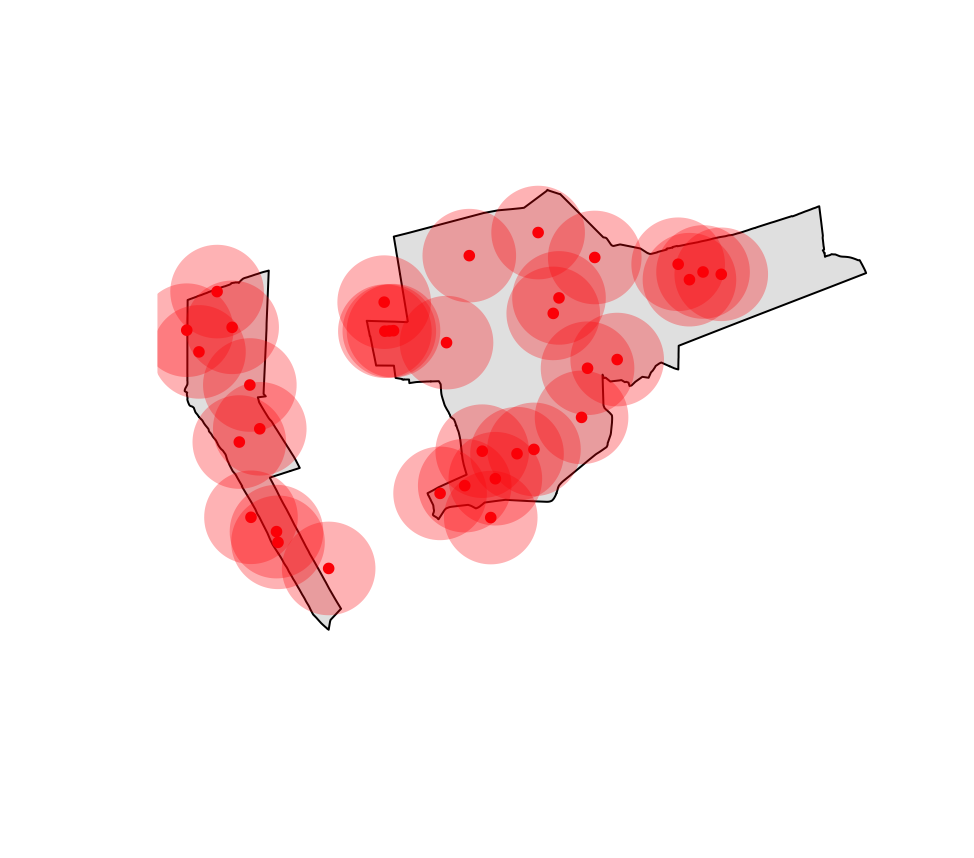
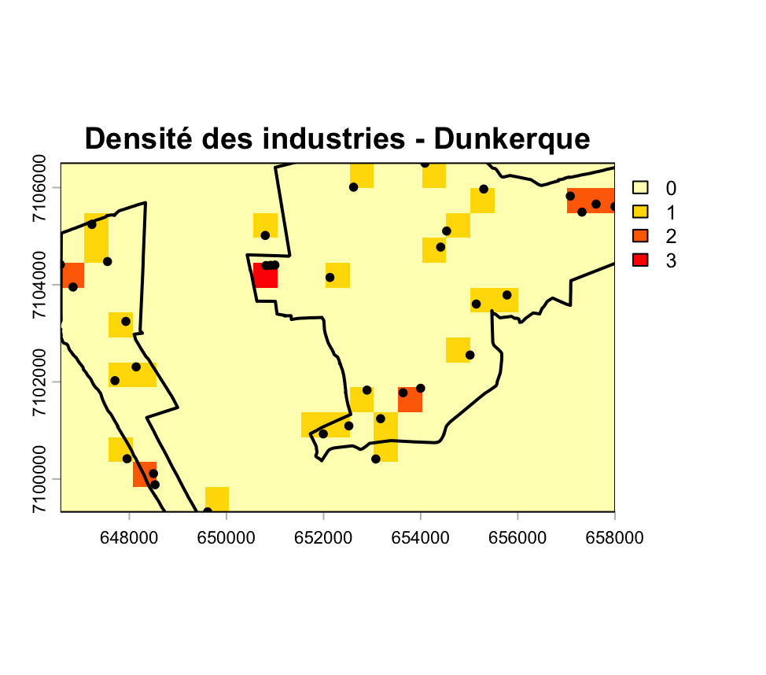
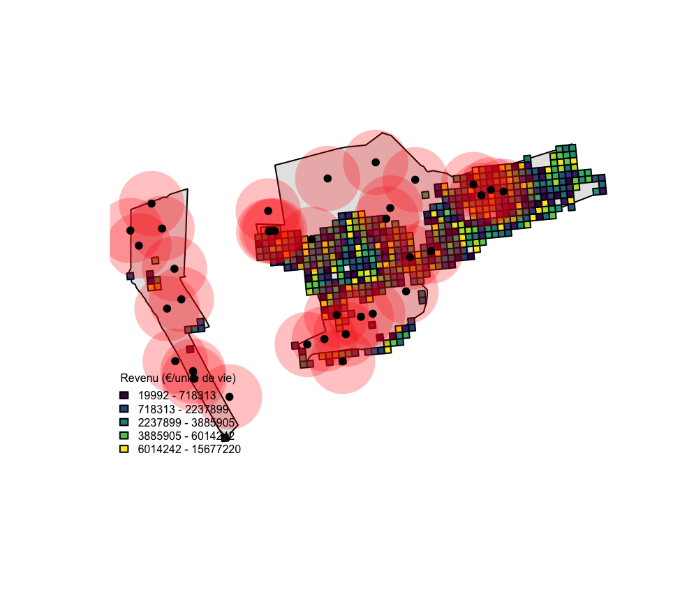
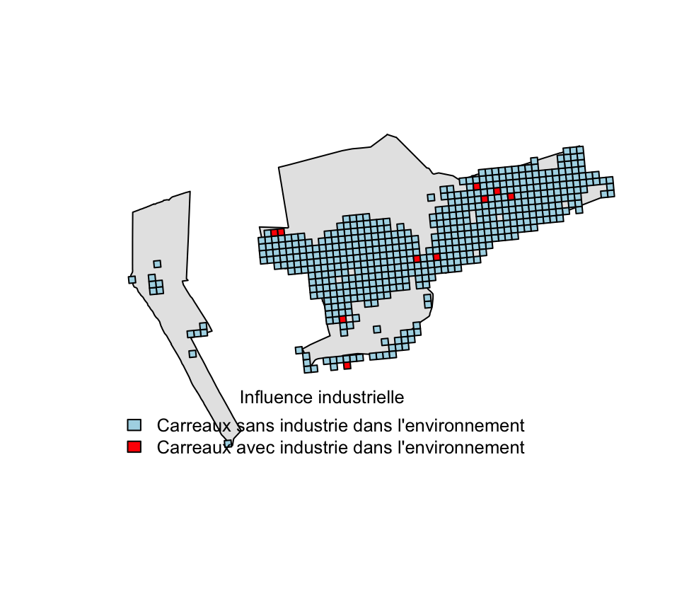

Les analyses réalisées permettent d’identifier l’organisation spatiale des activités industrielles à Dunkerque et d’évaluer leur relation potentielle avec la distribution des niveaux de vie de la population.
Les sites industriels apparaissent fortement concentrés dans certains secteurs de la commune, traduisant une structuration spatiale marquée de l’activité industrielle. Cette concentration suggère l’existence de pôles économiques spécialisés, probablement liés à l’histoire portuaire et industrielle de Dunkerque.

Buffers de 1000 mètres autour des sites industrielsLa création de buffers de 1000 mètres autour de chaque site industriel permet de modéliser leur zone d’influence théorique sur le territoire dunkerquois.
Cette approche permet d’identifier les espaces potentiellement exposés aux effets directs ou indirects de l’activité industrielle comme les nuisances, l’accessibilité à l’emploi, l’artificialisation du territoire ou encoreune certaine pression foncière.
La superposition des buffers montre que certaines zones de Dunkerque cumulent plusieurs influences industrielles, ce qui démontre une intensité d’exposition potentiellement plus forte.
buffer_ind <- st_buffer(industries_pts, dist = 1000)
plot(st_geometry(dunkerque),
col = "grey90",
border = "black")
plot(st_geometry(buffer_ind),
add = TRUE,
col = rgb(1, 0, 0, 0.3),
border = NA)
plot(st_geometry(industries_pts),
add = TRUE,
col = "red",
pch = 20)
Raster de densité spatiale des industries à Dunkerque.L’analyse raster de densité permet de dépasser la simple localisation ponctuelle des industries en mettant en évidence leur concentration spatiale.
Les zones les plus denses correspondent aux principaux noyaux industriels du territoire. Ces espaces apparaissent comme les secteurs structurants de l’activité économique locale.
Cette représentation permet également d’identifier des gradients de densité, allant des zones fortement industrialisées vers des secteurs plus résidentiels ou moins urbanisés.
plot(dens,
col = rev(heat.colors(10)),
main = "Densité des industries - Dunkerque")
plot(st_geometry(dunkerque_2154),
add = TRUE,
col = NA,
border = "black",
lwd = 2)
plot(st_geometry(industries_2154),
add = TRUE,
col = "black",
pch = 20)
Analyse croisée entre les niveaux de vie et la proximité des zones industrielles à DunkerqueL’analyse croisée met en évidence des différences spatiales de revenus entre les secteurs proches des industries et les secteurs plus éloignés.
industries_2154 <- st_transform(industries_pts, 2154)
buffer_ind <- st_buffer(industries_2154, 1000)
revenus_2154 <- st_transform(revenus, 2154)
revenus_ind <- st_intersection(revenus_2154, st_union(buffer_ind))
mean(revenus_2154$ind_snv, na.rm = TRUE)
mean(revenus_ind$ind_snv, na.rm = TRUE)
plot(st_geometry(dunkerque_2154),
col = "grey90",
border = "black")
plot(revenus_2154["ind_snv"],
add = TRUE,
col = viridis(10))
plot(st_geometry(buffer_ind),
add = TRUE,
col = rgb(1,0,0,0.25),
border = NA)
plot(st_geometry(industries_2154),
add = TRUE,
col = "black",
pch = 20)
legend("bottomleft",
title = "Revenu (€/unité de vie)",
legend = c(
paste0(round(breaks[1],0), " - ", round(breaks[2],0)),
paste0(round(breaks[2],0), " - ", round(breaks[3],0)),
paste0(round(breaks[3],0), " - ", round(breaks[4],0)),
paste0(round(breaks[4],0), " - ", round(breaks[5],0)),
paste0(round(breaks[5],0), " - ", round(breaks[6],0))
),
fill = cols,
bty = "n",
cex = 0.5)
Identification des carreaux situés dans l’environnement industrielLa jointure permet d’identifier clairement les carreaux situés dans l’environnement immédiat des industries et confirme la structuration spatiale observée tout au long de l’analyse. Elle représente bien les interactions entre activité industrielle et organisation socio-spatiale du territoire de Dunkerque.
revenus_join <- st_join(revenus_2154, industries_2154)
revenus_2154$nb_industries <- lengths(
st_intersects(revenus_2154, industries_2154)
)
tapply(revenus_2154$ind_snv,
revenus_2154$nb_industries > 0,
mean,
na.rm = TRUE)
plot(st_geometry(dunkerque_2154),
col = "grey90",
border = "black")
plot(revenus_2154[revenus_2154$nb_industries == 0, ],
col = "lightblue",
add = TRUE)
plot(revenus_2154[revenus_2154$nb_industries > 0, ],
col = "red",
add = TRUE)
legend("bottomleft",
title = "Influence industrielle",
legend = c("Carreaux sans industrie dans l'environnement",
"Carreaux avec industrie dans l'environnement"),
fill = c("lightblue", "red"),
bty = "n",
cex = 0.8)Note méthodologique :
Le revenu moyen par habitant a été
calculé en divisant la somme des niveaux de vie (ind_snv)
par le nombre d’individus (ind) pour chaque carreau INSEE.
Une analyse de proximité a ensuite été réalisée à l’aide d’un buffer de
1000 mètres autour des industries afin de distinguer les carreaux situés
à proximité d’au moins une industrie de ceux plus éloignés. La
comparaison des moyennes a permis d’évaluer l’impact potentiel de la
proximité industrielle sur le niveau de vie.
revenus_2154$revenu_moyen <- revenus_2154$ind_snv / revenus_2154$ind
summary(revenus_2154$revenu_moyen)
revenus_2154$industrie_proche <- lengths(
st_intersects(revenus_2154, buffer_ind)
) > 0
tapply(
revenus_2154$revenu_moyen,
revenus_2154$industrie_proche,
mean,
na.rm = TRUE)| Situation | Revenu moyen (€ / habitant) |
|---|---|
| Sans industrie proche | 24 517 € |
| Avec industrie proche | 22 277 € |
| Indicateur | Valeur |
|---|---|
| Écart moyen observé | -2 240 € |
| Variation relative | -9,1 % |
L’analyse statistique confirme l’observation cartographique.
Les carreaux situés à proximité d’au moins une industrie présentent un revenu moyen inférieur d’environ 2 240 € par habitant, soit une baisse relative de 9,1 % par rapport aux zones plus éloignées.
Cette différence est significative à l’échelle de l’étude et montre une corrélation spatiale entre proximité industrielle et niveau de vie.
Néanmoins, cette relation ne permet pas d’établir une causalité directe. D’autres facteurs territoriaux peuvent également expliquer cette répartition comme la structure urbaine, l’histoire du développement industriel ou les différence de politiques d’aménagement.